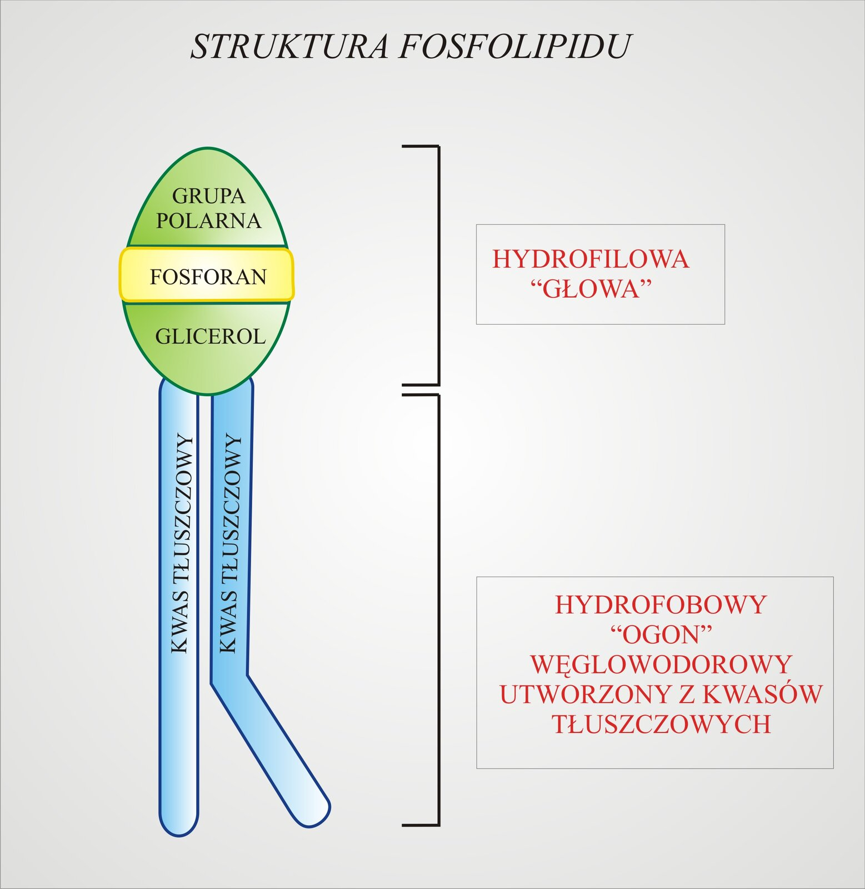
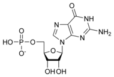

Skład chemiczny organizmów. Makro- i mikroelementy
Podstawowym składnikiem chemicznym są pierwiastki chemiczne, które
później tworzą związki chemiczne, bądź występują w postaci jonów
Te związki dzielą sie na ZWIĄZKI ORGANICZNE i ZWIĄZKI NIEORGANICZNE
Związki organiczne to białka, lipidy, węgllowodany, kwasy nukleinowe
Związki NIEorganiczne to m.in. woda i sole mineralne
Pierwiastki dzielą się na makro i mikroelementy
Makroelementy - pierwiastki występujące w organizmie w dużych
ilościach (około 0.01% lub więcej suchej masy danego organizmu(masa
organizmu po odparowaniu z niego wody))
Mikroelementy - pierwiastki występujące w organizmie w niewielkich
ilościach (mniej niż 0.01% suchej masy danego oragnizmu(masa organizmu
po odparowaniu z niego wody))
Przykład makroelementów biogennych:
węgiel(C) wodór(H) tlen(O) azot(N) fosfor(P) siarka(S)
Przykład pozostałych makroelementów:
wapń(Ca) magnez(Mg) potas(K) sód(Na) chlor(Cl)
Przykład mikroelementów:
żelazo(Fe) miedź(Cu) jod(I) fluor(F) kobalt(Co)
Ile masy naszego ciała stanowią poszczególe pierwiastki
Tlen - 61%
Węgiel - 23%
Wodór - 10%
Azot - 2,6%
Wapń - 1,4%
Fosfor - 1,1%
Znaczenie mikro i makroelementów dla organizmu
Tlen - składnik związków organicznych, substrat oddychania tlenowego
Węgiel - składnik wszystkich związków ogranicznych, glukoza zawarta w
nim jest substratem oddychania tlenowego
Wodór - składnik związków organicznych, decyduje o pH płynów (tylko w
postacji jonów), ma udział w wytwarzaniu nośnika energii(ATP)
Azot - składnik białek i kwasów nukleinowych
Fosfor - składnik kwasów nukleinowych, znajduje się w ATP, buduje
kości i zęby w postaci fosforanu
Siarka - składnik wiel białek
Wapń - potrzebny do prawidłowego funkcjonowania komórek, buduje kości,
potrzebny przy krzepnięciu krwi
Magnez - potrzebny do prawidłowego funkcjonowania komórek, regulacja
działania enzymów
Sód/Potas - przewodzenie impulsów nerwowych, regulacja ciśnienia krwi,
regulacja ilości wody w organizmie
Chlor - składnik płynów ustrojowych, składnik soku żołądkowego
Żelazo - skład hemoglobiny
Miedź - składnik enzymów, tworzenie melaniny
Jod - składnik hormonów tarczycy
Fluor - składnik szkliwa
Kobalt - składnik witaminy B12 (powstawanie erytrocytów)
Znaczenie wody dla organizmów
Znaczenie wody dla naszego organizmu
Woda jest głównym związkiem nieorganicznym, który wchodzi w skład
wszystkich organizmów. Nasz organizm składa się większości z wody
Wątroba – 68%
Skóra – 72%
Mózg – 75%
Oko – 99% (!)
Kości – 25%
Szkliwo zębów – 3%
Znaczenie wody dla organizmów
Jest ona dobrym rozpuszczalnikiem – rozpuszcza i transportuje
substancje i jest środowiskiem przebiegania procesów metabolicznych we
wszystkich organizmach
Jej gęstość zależy od temperatury – dzięki temu organizmy wodne mogą
przetrwać zimę
Ma duże napięcie powierzchniowe – niektóre małe organizmy mogą się po
niej poruszać
Ma wysokie ciepło parowania – dzięki temu możliwa jest termoregulacja
Ma duże właściwości cieplne – ochrania dzięki temu organizmy przed
nagłymi zmianami temperatury
Węglowodany - budowa i znaczenie
Monosacharydy (cukry proste)
Fruktoza => Naturalny cukier owocowy, który dostarcza energii i jest
przetwarzany przez wątrobę.
Glukoza => Podstawowy źródło energii dla komórek, szczególnie mózgu.
Deoksyryboza i Ryboza => Składniki kwasów nukleinowych (Deoksyryboza
- DNA | Ryboza - RNA), odgrywające kluczową rolę w dziedziczeniu
informacji genetycznej.
Galaktoza => Składnik disacharydu – laktozy, obecny w produktach
mlecznych.
Disacharydy (dwucukry)
Laktoza => Znana jako cukier mleczny, dostarcza energii oraz jest
kluczowym składnikiem mleka matki.
Sacharoza => Powszechnie znany cukier stołowy, występuje naturalnie w
wielu roślinach.
Maltoza => Powstaje w wyniku rozkładu skrobi, stanowi źródło energii.
Polisacharydy
Skrobia => Główny polisacharyd w diecie ludzkiej, źródło energii
pochodzącej z roślin.
Celuloza => Nieprzyswajalny przez człowieka polisacharyd roślinny,
stanowi błonnik pokarmowy, wspomagający trawienie.
Glikogen => Polisacharyd magazynowany w wątrobie i mięśniach,
pełniący rolę rezerwuaru energii.
Chityna => Znajduje się w ścianach komórkowych grzybów i
egzoszkieletach stawonogów, pełniąca funkcję ochronną.
Białka - ich właściwości i wykrywanie
Budowa białek
Białka są zbudowane z 20 aminokwasów, które są ułożone w odpowiedniej
kolejności. Kolejność aminokwasów jest zapisana w DNA
Aminokwasy są połączone w białku za pomocą wiązania peptydowego
(połaczenie grupy karboksylowej 1 aminokwasu z grupą karboksylową 2
aminokwasu)
Pojedynczy aminokwas jest zbudowany z czterech eleementów
centralnie położonego atomu węgla
grupy karboksylowej(COOH)
grupy aminowej(NH2)
podstawnika oznaczonego symbolem R
Podział białek
Białka proste - składają się wyłącznie z aminokwasów
Przykłady
histony keratyna albuminy globuliny
Białka złożone - składają się z aminokwasów i części niebiałkowej (np.
cukry, tłuszcze, kwasy nukleinowe, jony metalu)
Przykłady
kolagen mioglobina hemoglobina fibrynogen
Funkcje pełnione przez białka
Funkcja strukturalna (histony, tubulina – białka strukturalne,
elementy rzęsek i wici, kolagen – chrząstki, ścięgna, więzadła;
keratyna – włosy, paznokcie)
Funkcja enzymatyczna (enzymy trawienne, pepsyna – rozkłada białko na
aminokwasy; białka, które przyspieszają procesy chemiczne w naszym
organizmie)
Funkcja regulująca pracę organizmu (hormony, testosteron, estrogen,
insulina – rozkłada i reguluje poziom cukru w organizmie, abyśmy mogli
normalnie funkcjonować)
Funkcja magazynująca (mioglobina – magazynuje tlen w komórkach i
włóknach mięśnia)
Funkcja wspomagająca ruch (aktyna, miozyna – umożliwiają ruch
mięśni)
Funkcja transportowa (albuminy, hemoglobina, białka transbłonowe –
wspomagają
Funkcja odpornościowa (globuliny – przeciwciała; mają za zadanie
ochraniać nasz organizm przed antygenami)
Funkcja ochronna (fibrynogen – jeden z elementów skrzepu; ochraniają
organizm przed własnymi zagrożeniami takimi jak np.
wykrwawienie)
Właściwości i wykrywanie białek
Koagulacja
Większość białek rozpuszcza się w wodzie
Roztwór koloidalny tzn. niejednorodna mieszanina dwóch substancji
To proces polegający na łączeniu się cząsteczek koloidu w większe
struktury np. wysalanie białka poprzez NaCl
Jest to proces odwracalny
Denaturacja
Naruszenie struktury białka pod wpływem czynników chemicznych i
fizycznych
Czynniki chemiczne to np. alkohol zasady sole metale cięzkie kwasy
Czynniki fizyczne to np. temperatura ponad 40 stopni promieniowanie
x-ray | UV | gamma wysokie ciśnienie
Reakcja biuretowa
Metoda wykrywania białka poprzez wykrywanie wiązań peptydowych
Lipidy - budowa i znaczenie
Co dają nam tłuszcze?
- Dają energię
- Pełnią funkcję termoizolacyjną (u ssaków)
- Chronią narządy wewnętrzne
- Tworzą nieprzemakalną powłokę
- Chronią przed nadmiernym parowaniem wody
Podział tłuszczy
Ze względu na budowę
Proste
↙ ↘
Glicerol | Resztę kwasu tłuszczowego, który może być nasycony lub
NIEnasycony
Złożone
↙ ↘
Fosfolipidy | glikolipidy
↙ ↘
reszta kwasu fosforanowego | reszta kwasu glikogenowego
Ze względu na konstystencję
Stałe
Ciekła
Ze względu na pochodzenie
Roślinne
Zwierzęce
Przykładem tłuszczu prostego jest WOSK
Lipidy złożone - budują błony białkowolipidowe
W skład lipidów złożonych wchodzi:
- alkohol
- reszta kwasu tłuszczowego
- dodatkowego elementu
Budowa fosfolipidu

Cholesterol wbuduje się w błony białkowolipidowe, co powoduje
usztywnienie błony komórkowej/komórki, uszczelnienie jej.
Cholesterol w nadmiarze jest bardzo szkodliwy
Budowa i funkcje kwasów nukleinowych
Kwasy nukleinowe to poprostu DNA(nośnik informacji genetycznej) i RNA
Pomiędzy zasadami azotowymi tworzącymi te dwie nici występują wiązania
wodorowe
Nukleotyd jest podstawową jednostką budującą kwasy nukleinowe
DNA występuje w mitochondrium i chloroplastach poza jądrami
komórkowymi
Zasada KOMPLEMENTARNOŚCI jest to główna zasada, dzięki której dwie
nici DNA mogą się łączyć w bardzo określony sposób
Budowa cząsteczki DNA
- 2 nici
- ułożone równolegle względem siebie
- spiralnie skręcone
- tworzące strukturę nazywaną podwójną helisą
Zasady azotowe
- ADENINA <=> TYMINA
- CYTOZYNA <=> GUANINA
Budowa nukleotydu
